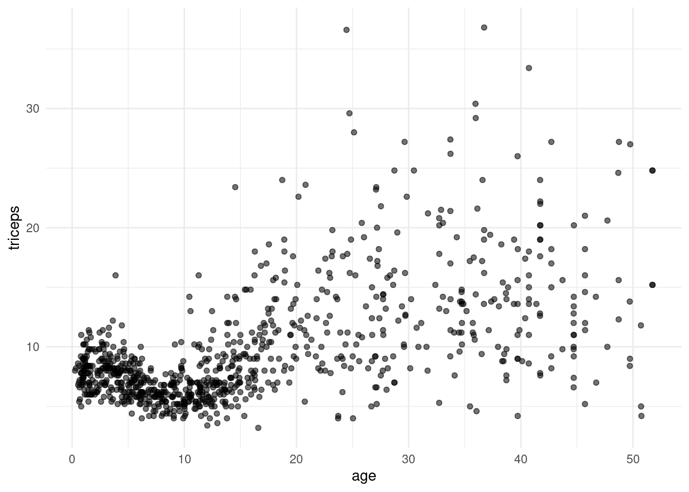
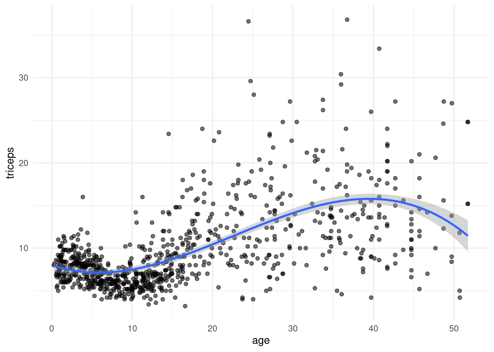
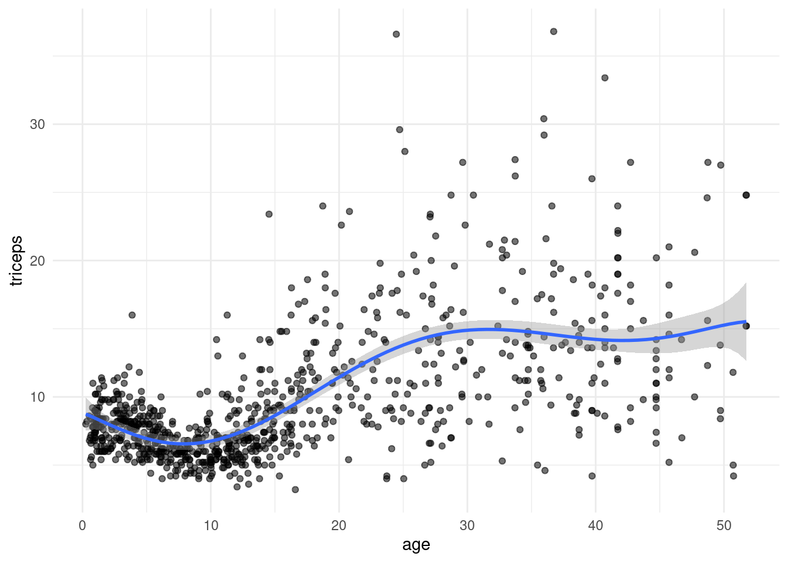
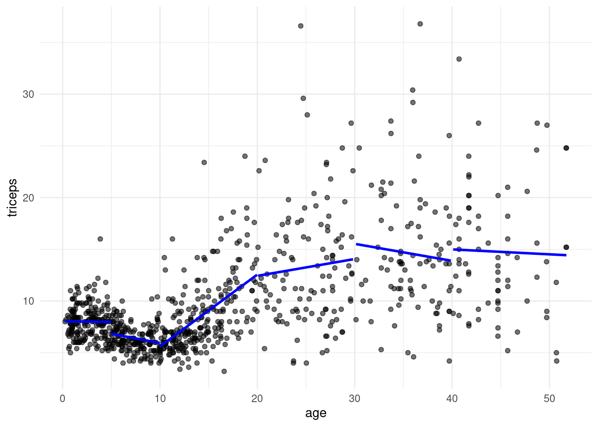
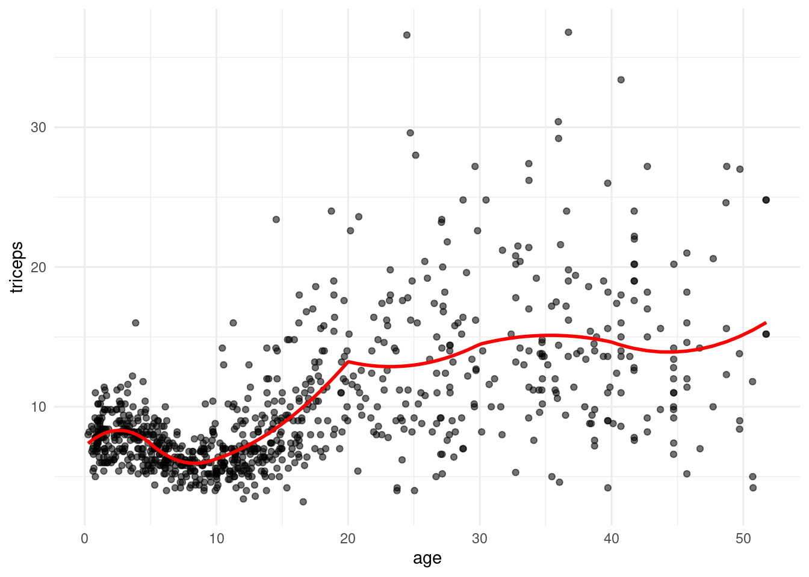
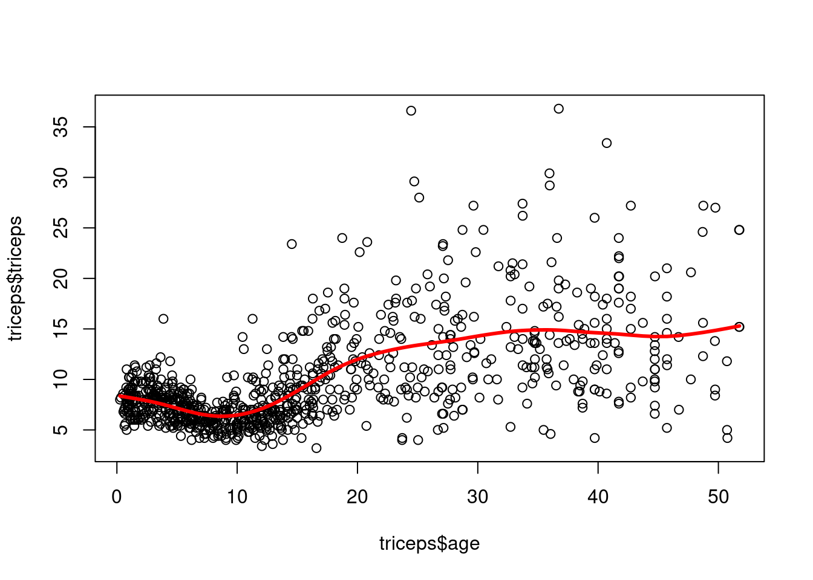
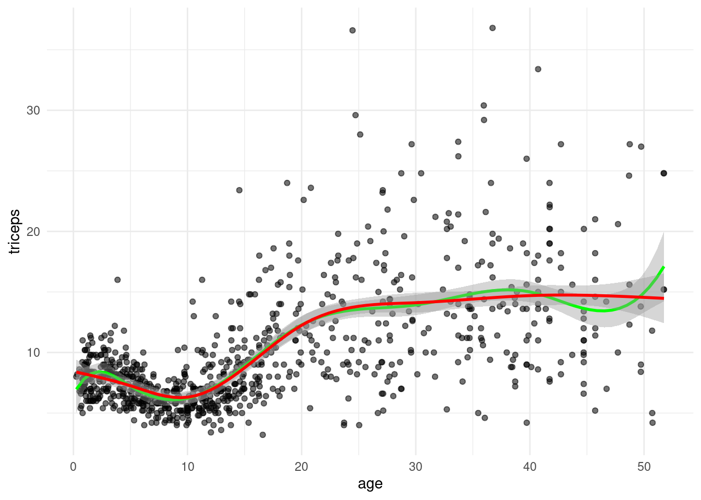
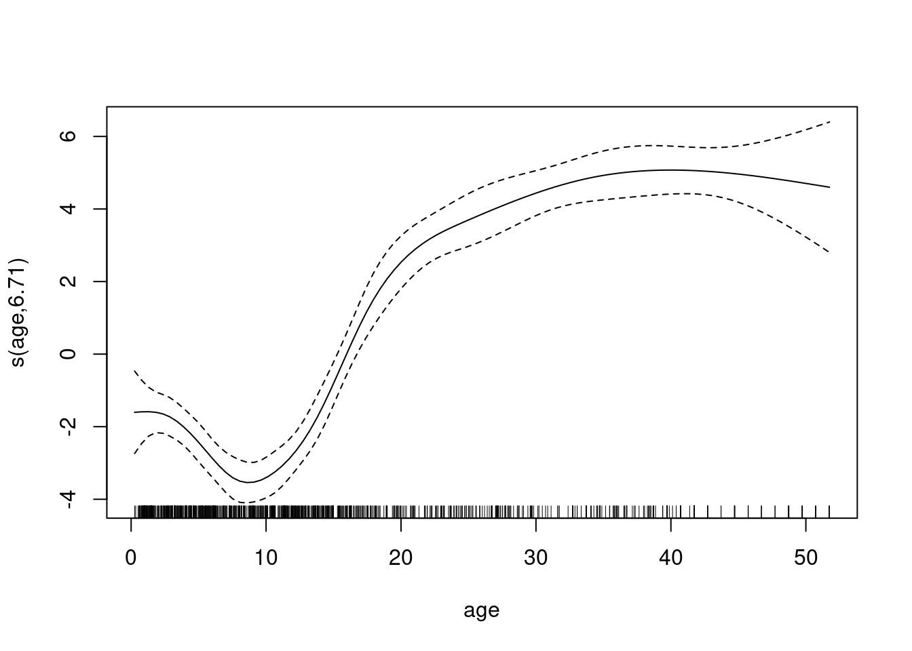

Attaching package: 'psych'The following objects are masked from 'package:ggplot2':
%+%, alphaAndré Meichtry
October 6, 2022
Triceps skinfold thickness dataset: The data are derived from an anthropometric study of 892 females under 50 years in three Gambian villages in West Africa.
Attaching package: 'psych'The following objects are masked from 'package:ggplot2':
%+%, alpha age lntriceps triceps
1 12.05 1.22 3.4
2 9.91 1.39 4
3 10.04 1.44 4.2
4 11.49 1.44 4.2
... ... ... ...
889 7.91 1.92 6.8
890 7.99 1.44 4.2
891 14.63 2.2 9
892 30.14 2.1 8.2tri.age.plot <- ggplot(triceps, aes(x=age, y=triceps)) +
geom_point(alpha=0.55, color="black") +
theme_minimal()
tri.age.plot
model.cubic.poly <- lm(triceps~poly(age,3,raw=TRUE),data=triceps)
## the same model:
## model.cubic <- lm(triceps~age + I(age^2) + I(age^3),
## data=triceps)
tri.age.plot +
stat_smooth(method = "lm",
formula = y~poly(x,3,raw=T), size = 1)
RMSE RMSE RMSE RMSE RMSE RMSE RMSE RMSE RMSE RMSE
[1,] 3.984711 4.083302 3.830449 3.77627 3.787051 3.740982 3.847184 3.803367 3.866925 3.803712tri.age.plot +
stat_smooth(method = "lm",
formula = y~poly(x,6,raw=T), size = 1)
pred1 <- predict(lm(triceps~age,
data = triceps[triceps$age<5,]))
pred2 <- predict(lm(triceps~age,
data = triceps[triceps$age >=5 & triceps$age<10,]))
pred3 <- predict(lm(triceps~age,
data = triceps[triceps$age>=10 & triceps$age<20,]))
pred4 <- predict(lm(triceps~age,
data = triceps[triceps$age>=20 & triceps$age<30,]))
pred5 <- predict(lm(triceps~age,
data = triceps[triceps$age>=30 & triceps$age<40,]))
pred6 <- predict(lm(triceps~age,
data = triceps[triceps$age>=40,]))
tri.age.plot +
geom_line(data=triceps[triceps$age<5,],
aes(y = pred1, x=age), size = 1, col="blue") +
geom_line(data=triceps[triceps$age >=5 & triceps$age<10,],
aes(y = pred2, x=age), size = 1, col="blue") +
geom_line(data=triceps[triceps$age>=10 & triceps$age<20,],
aes(y = pred3, x=age), size = 1, col="blue") +
geom_line(data=triceps[triceps$age>=20 & triceps$age<30,],
aes(y = pred4, x=age), size = 1, col="blue") +
geom_line(data=triceps[triceps$age>=30 & triceps$age<40,],
aes(y = pred5, x=age), size = 1, col="blue") +
geom_line(data=triceps[triceps$age>=40,],
aes(y = pred6, x=age), size = 1, col="blue")
\[Y_i=\beta_0+\beta_1x_i+\beta_2I_{x_i\geq 5}(x_i-5)+\cdots+\beta_6I_{x_i \geq 40}(x_i-40) + \epsilon_i\]
By “hand” or with B-splines: splines::bs()
pred7 <- predict(lm(triceps~ age + I((age-5)*(age>=5)) +
I((age-10)*(age >= 10)) +
I((age-20)*(age >= 20)) +
I((age-30)*(age >= 30)) +
I((age-40)*(age >= 40)),
data = triceps))
library(splines)
pred.lm.bs <- predict(lm(triceps ~ bs(age, knots = c(5,10,20,30,40),degree=1), data=triceps))
tri.age.plot +
geom_line(data=triceps,
aes(y = pred.lm.bs, x=age), size = 1, col="blue")+
geom_line(data=triceps,
aes(y = pred7+.2, x=age), size = 1, col="red")pred.quad <- predict(lm(triceps~ age + I(age^2) +
I((age-5)*(age>=5)) + I((age-5)^2*(age>=5)) +
I((age-10)*(age >= 10)) + I((age-10)^2*(age>=10)) +
I((age-20)*(age >= 20)) + I((age-20)^2*(age>=20)) +
I((age-30)*(age >= 30)) + I((age-30)^2*(age>=30)) +
I((age-40)*(age >= 40)) + I((age-40)^2*(age>=40)),
data = triceps))
tri.age.plot +
geom_line(data=triceps,
aes(y = pred.quad, x=age), size = 1, col="red")
Not smooth yet, let us use only quadratic terms
pred.quadsmooth <- predict(lm(triceps~ age + I(age^2) +
I((age-5)^2*(age>=5)) +
I((age-10)^2*(age>=10)) +
I((age-20)^2*(age>=20)) +
I((age-30)^2*(age>=30)) +
I((age-40)^2*(age>=40)),
data = triceps))
pred.quadsmooth2 <- predict(lm(triceps ~ bs(age, knots = c(5,10,20,30,40),degree=2), data=triceps))
tri.age.plot +
geom_line(data=triceps,
aes(y = pred.quadsmooth, x=age), size = 1, col="blue")+
geom_line(data=triceps,
aes(y = pred.quadsmooth2+.2, x=age), size = 1, col="red")\[Y_i=\beta_0+\beta_1x_i+\beta_2x^2+\beta_3x^3+\beta_4I_{x_i\geq 5}(x_i-5)^3+\cdots+\beta_9I_{x_i \geq 40}(x_i-40)^3 + \epsilon_i\]
tri.age.plot <- ggplot(triceps, aes(x=age, y=triceps)) +
geom_point(alpha=0.55, color="black") +
theme_minimal()
tri.age.plot +
stat_smooth(method = "lm",
formula = y~bs(x,knots = c(5,10,20,30,40)),
lty = 1, col = "green") +
stat_smooth(method = "lm",
formula = y~ns(x,knots = c(5,10,20,30,40)),
lty = 1, col = "red")
Avoids the knot selection problem completely by using a maximal set of knots. The complexity of the fit is controlled by regularization. Problem: among all functions \(f(x)\) with two continuous derivatives, find one that minimizes the penalized residual sum of squares
\[ RSS(f,\lambda)=\sum_{i=1}^N(y_i-f(x_i))^2+\lambda[f''(t)]^2dt\]
where \(\lambda\) is a fixed smoothing parameter. The first term measures closeness to the data, while the second term penalizes curvature in the function, and \(\lambda\) establishes a tradeoff between the two. Special cases: \(\lambda=0\) (no constraint on \(f\)) and \(\lambda=\infty\) (\(f\) has to be linear). It can be shown that this problem has an explicit, finite-dimensional, unique minimizer which is a natural cubic spline with knots at the unique values of the \(x_i,i= 1, . . . , N.\)
At face value it seems that the family is still over-parametrized, since there are as many as \(N\) knots, which implies \(N\) degrees of freedom. However, the penalty term translates to a penalty on the spline coefficients, which are shrunk some of the way toward the linear fit.
The solution is of the form
\[f(x)=\sum_{j=1}^N\theta_iN_j(x),\]
where the \(N_j(x)\) are an \(N\)-dimensional set of basis functions for representing this family of natural splines.
sspline <- smooth.spline(x=triceps$age, y=triceps$triceps, cv=TRUE)Warning in smooth.spline(x = triceps$age, y = triceps$triceps, cv = TRUE): cross-validation with non-unique 'x' values
seems doubtful
library(mgcv)Loading required package: nlmeThis is mgcv 1.8-35. For overview type 'help("mgcv-package")'.
Family: gaussian
Link function: identity
Formula:
triceps ~ s(age, bs = "cr")
Parametric coefficients:
Estimate Std. Error t value Pr(>|t|)
(Intercept) 9.7024 0.1255 77.29 <2e-16
Approximate significance of smooth terms:
edf Ref.df F p-value
s(age) 6.706 7.539 85.6 <2e-16
R-sq.(adj) = 0.419 Deviance explained = 42.3%
GCV = 14.18 Scale est. = 14.057 n = 892plot(gamtri)
---
title: "Splines are beautiful"
date: "2022-10-06"
description: "From linear model to GAM"
categories: [code, analysis]
fig-cap-location: top
---
# Data
Triceps skinfold thickness dataset: The data are derived from an anthropometric study of 892 females under 50 years in three Gambian villages in West Africa.
```{r results="hide"}
library(MultiKink)
library(ggplot2)
library(psych)
```
```{r}
data("triceps")
headTail(triceps)
tri.age.plot <- ggplot(triceps, aes(x=age, y=triceps)) +
geom_point(alpha=0.55, color="black") +
theme_minimal()
tri.age.plot
```
# Polynomial regression
```{r polynomial}
model.cubic.poly <- lm(triceps~poly(age,3,raw=TRUE),data=triceps)
## the same model:
## model.cubic <- lm(triceps~age + I(age^2) + I(age^3),
## data=triceps)
tri.age.plot +
stat_smooth(method = "lm",
formula = y~poly(x,3,raw=T), size = 1)
```
# Cross-validation of different polynomials
## RMSE for quadratic
```{r}
library(caret)
set.seed(1234)
trC.lm <- trainControl(method = "repeatedcv",
number = 10,
repeats = 10)
pol.model <- train(triceps ~ poly(age,3),
data = triceps,
method = "lm",
trControl = trC.lm)
pol.model$results[2]
```
## RMSE for different degrees
```{r}
my.pol.f <- function(x){
xx<-poly(triceps$age, x, raw=T)
new.data <- cbind(triceps=triceps$triceps, xx)
pol.model <- train(triceps~., data = new.data,method = "lm")
RMSE.cv = pol.model$results[2]
}
t(sapply(1:10, my.pol.f))
```
```{r}
tri.age.plot +
stat_smooth(method = "lm",
formula = y~poly(x,6,raw=T), size = 1)
```
# Piecewise linear regression
```{r}
pred1 <- predict(lm(triceps~age,
data = triceps[triceps$age<5,]))
pred2 <- predict(lm(triceps~age,
data = triceps[triceps$age >=5 & triceps$age<10,]))
pred3 <- predict(lm(triceps~age,
data = triceps[triceps$age>=10 & triceps$age<20,]))
pred4 <- predict(lm(triceps~age,
data = triceps[triceps$age>=20 & triceps$age<30,]))
pred5 <- predict(lm(triceps~age,
data = triceps[triceps$age>=30 & triceps$age<40,]))
pred6 <- predict(lm(triceps~age,
data = triceps[triceps$age>=40,]))
tri.age.plot +
geom_line(data=triceps[triceps$age<5,],
aes(y = pred1, x=age), size = 1, col="blue") +
geom_line(data=triceps[triceps$age >=5 & triceps$age<10,],
aes(y = pred2, x=age), size = 1, col="blue") +
geom_line(data=triceps[triceps$age>=10 & triceps$age<20,],
aes(y = pred3, x=age), size = 1, col="blue") +
geom_line(data=triceps[triceps$age>=20 & triceps$age<30,],
aes(y = pred4, x=age), size = 1, col="blue") +
geom_line(data=triceps[triceps$age>=30 & triceps$age<40,],
aes(y = pred5, x=age), size = 1, col="blue") +
geom_line(data=triceps[triceps$age>=40,],
aes(y = pred6, x=age), size = 1, col="blue")
```
## Continuous piecewise
$$Y_i=\beta_0+\beta_1x_i+\beta_2I_{x_i\geq 5}(x_i-5)+\cdots+\beta_6I_{x_i \geq 40}(x_i-40) + \epsilon_i$$
By "hand" or with B-splines: `splines::bs()`
```{r}
pred7 <- predict(lm(triceps~ age + I((age-5)*(age>=5)) +
I((age-10)*(age >= 10)) +
I((age-20)*(age >= 20)) +
I((age-30)*(age >= 30)) +
I((age-40)*(age >= 40)),
data = triceps))
library(splines)
pred.lm.bs <- predict(lm(triceps ~ bs(age, knots = c(5,10,20,30,40),degree=1), data=triceps))
tri.age.plot +
geom_line(data=triceps,
aes(y = pred.lm.bs, x=age), size = 1, col="blue")+
geom_line(data=triceps,
aes(y = pred7+.2, x=age), size = 1, col="red")
```
## Piecewise quadratic polynomial
```{r}
pred.quad <- predict(lm(triceps~ age + I(age^2) +
I((age-5)*(age>=5)) + I((age-5)^2*(age>=5)) +
I((age-10)*(age >= 10)) + I((age-10)^2*(age>=10)) +
I((age-20)*(age >= 20)) + I((age-20)^2*(age>=20)) +
I((age-30)*(age >= 30)) + I((age-30)^2*(age>=30)) +
I((age-40)*(age >= 40)) + I((age-40)^2*(age>=40)),
data = triceps))
tri.age.plot +
geom_line(data=triceps,
aes(y = pred.quad, x=age), size = 1, col="red")
```
Not smooth yet, let us use only quadratic terms
```{r}
pred.quadsmooth <- predict(lm(triceps~ age + I(age^2) +
I((age-5)^2*(age>=5)) +
I((age-10)^2*(age>=10)) +
I((age-20)^2*(age>=20)) +
I((age-30)^2*(age>=30)) +
I((age-40)^2*(age>=40)),
data = triceps))
pred.quadsmooth2 <- predict(lm(triceps ~ bs(age, knots = c(5,10,20,30,40),degree=2), data=triceps))
tri.age.plot +
geom_line(data=triceps,
aes(y = pred.quadsmooth, x=age), size = 1, col="blue")+
geom_line(data=triceps,
aes(y = pred.quadsmooth2+.2, x=age), size = 1, col="red")
```
# Splines
## Cubic B-splines
$$Y_i=\beta_0+\beta_1x_i+\beta_2x^2+\beta_3x^3+\beta_4I_{x_i\geq 5}(x_i-5)^3+\cdots+\beta_9I_{x_i \geq 40}(x_i-40)^3 + \epsilon_i$$
```{r bs}
cub.splines.bs <- lm(triceps ~ bs(age, knots = c(5,10,20,30,40),degree = 3), data=triceps)
```
## Natural splines, restriction that the fitted curve linear at the extremes
```{r ns}
cub.splines.ns <- lm(triceps ~ ns(age, knots = c(5,10,20,30,40)), data=triceps)
```
```{r}
#| fig-cap: "polynomial cubic splines, natural cubic splines"
tri.age.plot <- ggplot(triceps, aes(x=age, y=triceps)) +
geom_point(alpha=0.55, color="black") +
theme_minimal()
tri.age.plot +
stat_smooth(method = "lm",
formula = y~bs(x,knots = c(5,10,20,30,40)),
lty = 1, col = "green") +
stat_smooth(method = "lm",
formula = y~ns(x,knots = c(5,10,20,30,40)),
lty = 1, col = "red")
```
# Smoothing splines
Avoids the knot selection problem completely by using a maximal set of
knots. The complexity of the fit is controlled by regularization.
Problem: among all functions $f(x)$ with two continuous derivatives,
find one that minimizes the penalized residual sum of squares
$$ RSS(f,\lambda)=\sum_{i=1}^N(y_i-f(x_i))^2+\lambda[f''(t)]^2dt$$
where $\lambda$ is a fixed smoothing parameter. The first term measures closeness to the data, while the second term
penalizes curvature in the function, and $\lambda$ establishes a tradeoff
between the two. Special cases: $\lambda=0$ (no constraint on $f$) and
$\lambda=\infty$ ($f$ has to be linear). It can be shown that this
problem has an explicit, finite-dimensional, unique minimizer which is
a natural cubic spline with knots at the unique values of the $x_i,i= 1, . . . , N.$
At face value it seems that the family is still over-parametrized, since
there are as many as $N$ knots, which implies $N$ degrees of freedom.
However, the penalty term translates to a penalty on the spline
coefficients, which are shrunk some of the way toward the linear fit.
The solution is of the form
$$f(x)=\sum_{j=1}^N\theta_iN_j(x),$$\
where the $N_j(x)$ are an $N$-dimensional set of basis functions for
representing this family of natural splines.
```{r}
sspline <- smooth.spline(x=triceps$age, y=triceps$triceps, cv=TRUE)
plot(triceps$age, triceps$triceps)
lines(sspline, lwd=3,col="red")
```
```{r eval=FALSE,echo=FALSE}
ssplinecv <- smooth.spline(x=triceps$age, y=triceps$triceps, cv=T)
ssplinelambda <- smooth.spline(triceps$age,
triceps$triceps, lambda=.0)
ssplinedf <- smooth.spline(triceps$age,
triceps$triceps, df=6)
plot(triceps$age, triceps$triceps)
lines(ssplinecv, col="red")
lines(ssplinelambda, col="blue")
lines(ssplinedf, col="green")
```
# Generalized additive model
```{r GAM}
library(mgcv)
gamtri<-gam(triceps~s(age,bs="cr"),data=triceps)
summary(gamtri)
plot(gamtri)
```